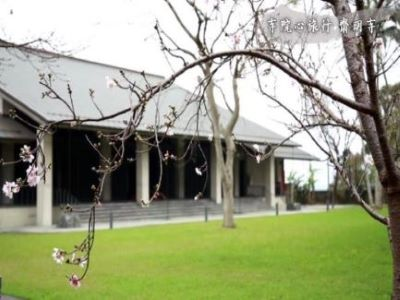
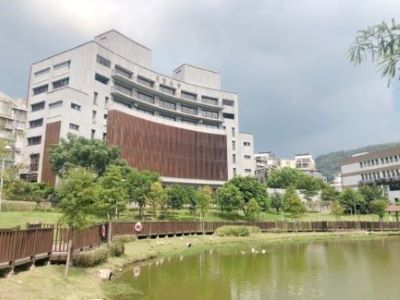

桃園，大漢溪畔，由古意盎然的大溪老街，直趨花木扶疏的山徑，盡頭，百年古剎齋明寺內安奉的觀世音菩薩，正諦視著溪水晝夜不捨地奔流。水的遷流，宣說著世事無常的教法；然而溪水終向大海，一如齋明寺的百年流轉，從佛教至齋教，隨著時代遷變，終究，歸向了佛的本懷。一百六十多年前，清道光30（西元1850）年，桃園大嵙崁農民李阿甲皈依三寶後，渡海赴大陸南海普陀山法雨寺出家受戒，法號性悅。爾後，性悅法師帶著自南海請回的觀世音菩薩返回故鄉，於當地結蘆清修。這是「齋明寺」與正信佛教在大嵙崁一帶扎根的初始。
read more
農禪寺
「農禪寺」，是法鼓山的開山宗師東初老人，根據百丈禪師創立的叢林制度，以務農維生、禪修生活為主的原則而取的。最初只有一棟二層樓農舍，即這次被列入台北市歷史建築之一。這棟農舍目前位於大殿後方，一九七一年左右，由東初老人率領弟子建造；一九七五年，農舍落成啟用，一樓作為客堂，二樓則供奉文殊師利菩薩，稱為文殊殿。一九七七年，農禪寺才啟用一年多，老人即捨報往生，沒有太多時間在寺中弘法，不過他以文化教育發揚佛教的理念，以及自力更生的農禪家風，都被繼任的聖嚴師父繼承下來，並一一加以落實。
read more

雲來寺
2006年10月7日正式啟用个雲來寺，來在台北市北投區公館路，是法鼓山團體當中最新完工个寺院。而雲來寺个由來，也跟1989年農禪寺个拆遷問題搭界，因為農禪寺面臨拆遷，創辦人聖嚴法師希望讓台北市民有一个共同修習佛法个地方，就在北投地區積極尋。之後，雖然農禪寺沒畀拆遷，但是來新大樓完工之後，原來在各地承租大樓空間个單位或者事業體一點點遷進來，如：法鼓山佛教基金會、法鼓文化、慈善基金會、護法總會及行政中心......等單位。雲來寺雖然叫寺，但是邪其現代化，在台灣所登記个寺院廟當中，算是比較少見个一種建築。
read more